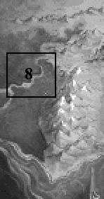
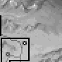
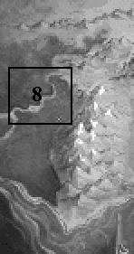
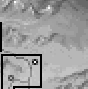
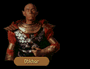

|  |  |
 |
 | ||||
| |||||||
|  | |
|
 | ||||
| |||||||
Bells tolled in the towers of Northwarden.Jubilant guards shouted from the walls, slapped backs, exchanged war stories only days old. Already a bard was milling through the crowd, gathering names and places, scribbling them down as fast as he could. Tonight they would gather, and they would drink, and they would pay old Tamney the Minstrel each time he sang their names.
Listening to the general hubbub drifting in through an opened shutter, Seigneur James allowed himself a grim smile as he dropped down to where Arutha and Locklear conferred over a battle map.
"By day's end, I warrant that Delekhan will have died on the sword point of every man here," James said. "It's a shame he wasn't really leading that raid."
"Indeed," Arutha agreed, his eyes shrouded as he brooded about something. "I would like to ask him a few questions."
"I leave for Highcastle at noon. Even though the moredhel have turned from here, I am certain that the first of them will be upon our troops there by sunup tomorrow. Fortunately, my army will be there to greet them. Still, I wish I knew what they were up to."
Arutha glanced up, startled, as a page boy skidded into the chamber.
"Your p-p-ardon my lord!" the boy stuttered. "They have captured the moredhel raiding leader!"
Without pause, Arutha's eyes hardened. "Prepare him for questioning."
ARUTHA: Cooperate now moredhel and I promise you'll live to see your children become adults. Daunt me and I'll have your eyes for necklace beads and your manhood for an inkwell!MOREDHEL: My death will be unimportant...
ARUTHA: If you think we shall torture you unto death, I would advise that you ponder my mood. Anxious though I am to have answer, I will keep you screaming this side of death a month or a year or until I feel well satisfied that we have heard all that you have to say!
MOREDHEL: A day, a month, you've already lost! Nail my entrails to your door post, feed...my brain to your dogs, it will not matter! Even if you act now, you will be too late!
ARUTHA: You will win only pain for your trouble! Instruct him, torturer!
MOREDHEL: You do...not...listen!
MOREDHEL: We know...the secret of Se-thanon! We shall free him!
ARUTHA: What secret? Why to Sethanon?
MOREDHEL: Ten years ago we attacked...with Murmandamus...you captured, imprisoned him...
ARUTHA: Deluded fool, we killed Murmandamus at Sethanon and burned his bones for potash! There is nothing there for Delekhan to find!
MOREDHEL: A lie...we have spied...What else could...you guard so closely?
ARUTHA: How does he think he will win past our garrison at Highcastle! He hasn't enough men!
ARUTHA: Answer me!
MOREDHEL: Riiift-machine!...The Six have a machine...It can take them place to place...like a door between great distances...Even while your troops die at Sethanon...we will walk through the machine!
MOREDHEL: We shall be through the Dimwood and inside Sethanon a week before you can reach us! Your troops will be exhausted! The day will be ours!
ARUTHA: A rift-machine inside the Dimwood! That bastard Tsurani magician has been consorting with Delekhan!
ARUTHA: Torturer, tell Seigneurs James and Locklear to ride to the Dimwood. They must find and destroy that rift-machine while I hie to Highcastle and divert our forces once more! Time is of the essence!
| NORTH EXIT (also South Exit, West Exit) |
James stopped.He looked at the band guarding the pass ahead and called out, "Will you allow us safe passage?"
A self-important looking guard glanced up from what he was doing, and replied, looking them over with a great measure of disdain. "We have orders that no one is to pass in or out of the Dimwood."
"Whose orders?" James challenged.
"From who originally, I'm certain I haven't a notion, but when my commanding officer gives an order, I follow it," he replied. Reaching for his sword and placing it's point into the soil in front of him, he stared menacingly at them. "Of course if you wish to make a point of challenging the wisdom of it, you are more than welcome to try us on."
Locklear stepped forward and stood next to James. "What's the point of fighting it out with our own?" he said, seeing his friend's temper flaring. "It's runs counter to what we want to accomplish. Once we charge, they may forget who they're fighting..."
James shook his head.
"It's this fellow's attitude that gets me. So, do we fight or leave?"
| FIGHT | LEAVE |
|
Locklear stepped up to the leader. "We'll kick your behind all the way to the Northlands," he boasted. Quickly, James stepped forward to confer with Locklear. "Have you finally lost what little wits you have? Are you trying to get us killed?", he asked. "Besides, this path is leading us AWAY from the rift machine we came to destroy." "Trust me," assured Locklear. "I think we can take them." As they prepared for battle the Goblin guard called to others hidden in the pass. Locklear shuddered as he saw warriors move from behind the trees, realizing the pass was indeed blocked. "On second thought, perhaps you shouldn't trust me," he said to James as they faced the first ranks of the advancing mob. |
James scowled. "Let's head back," he said. "This way leads out of the Dimwood and away from the rift machine. Arutha entrusted us to find and destroy it and I'll be damned first before I let him down on this." |
| AT THE BRIDGE |
Patrus was beginning to look pale.James felt a little guilty for having dragged the magical adviser along on such an extended mission, but since he had no knowledge whatsoever of magic, Prince Arutha had thought it wise to at least have him take a look at the alien rift machine. What none of them had counted on was that they would have been making much of their journey on foot.
For days they had ridden at a panicked pace, astride three of the finest chargers lent from the stables at Northwarden. Driven too hard for too long, the horses had all died within hours of one another, expiring long before they had reached the outer rim of the Dimwood forest. From there, they had been forced to walk, sneaking past a patrol of goblins who were taking up a defensive position on the road leading north out of the Dimwood.
Now, far behind enemy positions and without quick transport, they had a very difficult task ahead of them.
LOCKLEAR: So...nothing much to accomplish. Find something the size of a man in the whole of the Dimwood. Shouldn't be too difficult.
JAMES: Not the most difficult thing Arutha ever had us do. Remember that berry hunt we went on after the Riftwar? Very nearly wouldn't have found them if we hadn't realized the rain fall had been heavier that year. I'm just sorry we had to drag poor old Patrus along on this one.
PATRUS: You worry 'bout your own skins, you whelps. I ken I can run with the best of 'em and you two ain't no exception. Get runny nosed on me and I'll brain the both of you.
LOCKLEAR: Better listen to him, Jimmy. He's a killer.
JAMES: Umhum. I believe you're right. So, where do you think we should start looking for this rift machine? Your guess would be a good as mine.
LOCKLEAR: Since we just came from the north, I'd say it's a good bet it isn't up there anywhere. That still leaves east, west, south and everything in between. Like spearing fish in a barrel.
JAMES: That being the case, I suppose we just try to be as systematic as possible. I say we make a sweep east, then maybe move to the south or the west.
LOCKLEAR: East? Why? West seems as good a direction.
JAMES: Not sure. But the instinct that's telling me east is the same one that's kept me alive this long, and I've learned not to ignore it. If you've got a better idea, I'll follow your lead...
| RIFT MACHINE (without the Waani) |
The rift machine hummed.
Formed by a pair of staves driven into the ground, and topped by two metallic, mushroom shaped objects, it sometimes formed the shadows of the moredhel waiting at the other side of the gate...The air smelled of camphor. James took a step forward, intent on examining the strange device before him.
"No!" cried Patrus, grabbing his shoulder. "This is the rift machine we have been searching for. It is very dangerous and I would not advise getting too close."
Patrus was nearly frantic. "We must devise a way to destroy this machine before Delekhan transports an entire army through here!"
Meet: DUKE MARTIN
Meet: OBKHAR
| GOBLINS AT BRIDGE (without Password) |
The bridge was heavily guarded.Several goblins eyed them suspiciously as they approached.
"Delekhan has sent us to help guard the rift machine," shouted James in a gruff voice.
One of the goblins turned to the others and James thought he heard the words "Quegian mercenaries," this was followed by some laughter, which died down almost as quickly as it had begun. "What's the password?" demanded a goblin.
| BLUFF | LEAVE |
|
James looked confident. "Delekhan gave us a special password himself," he said. "I hope you're familiar with it. I'd hate to be in your hides if you're not. The new password is 'Sethanon.'" The goblin considered this for a moment, then shouted," It is a very bad day for liars! Prepare to die, kingdom dogs!" |
James shook his head. "The man who hired us didn't give us a password," he complained. But his bluff fell on deaf ears and James decided they shouldn't try to push their luck. "Ah, alright," he said in mock anger. "I guess we'll have to go back and get it." |
| GOBLINS AT BRIDGE (with Password) |
| FIRST TIME | SECOND TIME |
|
The bridge was heavily guarded. Several goblins eyed them suspiciously as they approached. "Delekhan has sent us to help guard the rift machine," shouted James in a gruff voice. One of the goblins turned to the others and James thought he heard the words "Quegian mercenaries," this was followed by some laughter, which died down almost as quickly as it had begun. "What's the password?" demanded a goblin. James stepped forward. His stomach in knots he fought desperately to remember the note he'd found in the fairy box. "Perhaps a sharp rap to your skull with the blade of my weapon would help you remember." "Narab's blood!" "Pass quickly, men of Queg. The air reeks with your presence." |
The bridge was heavily guarded. Several goblins eyed them suspiciously as they approached, their attention split between them and another group of goblins who were sparring half heartedly nearby. "Delekhan sent us to guard the machine," shouted James in a gruff voice, remembering his guise as a dull witted mercenary. One of the goblins turned to the others and spat something which James assumed to mean "Quegian mercenaries". Immediately laughter sprung up in the goblin ranks, then died down almost as quickly as the leader demanded the password. "The password is same as before. Blood of Narab's." "Pass. But move on before I decide to run you through, Quegian dog!" |
"It's not here," exclaimed James. "This is the chest Moreaulf told us about, but the Waani
isn't here! How will we find it now?"
"Probably tricked us," Patrus spat. "Can't 'spect a moredhel tell the truth even if'n he's
tellin' you how ta kiss his hindquarters!"
"I don't think that's it," James replied. Perhaps there is something else here that can tell
us what happened to the Waani..."
READ SQUIRE PHILLIP'S LETTER:
"I don't know what this Phillip fellow has got up his sleeves, but I intend to find out,"
James said. "It sounds almost as if he's trying to lure whoever finds that note north to his
home."
Looking past the man into the open room, James could see that he had prepared several bundles,
as though he were preparing to leave.
"I don't have time to talk now," said the man. "I'm leaving and I would urge you to do the same.
The goblins and moredhel have moved in...time for me to move out!"
"Where did you see them?" inquired Locklear.
Struggling to stuff a cotton shirt into a large bag, he replied, "They were heading
northwest...toward that witch Wilindi's cottage. Wouldn't be surprised if the old crow had
something to do with this. Now you'll really have to let me pack. Good day."
The storehouse was packed with much needed supplies. Enough, he mused silently, to feed a
private army. He was going to have to have a long talk with Arutha about royal secrets,
assuming they both survived this ordeal.
"Phillip said we could take whatever we needed," he said. "Right now, the only thing I've got
on my mind is getting something to eat. Let's get provisioned before we move on. Who knows how
long it will be before we see this much food again."
"Let's see if there is anything else here we can use that we didn't grab on our last visit," he
said.
"I pray to Ishap this wooden gem works," he said. "Though I hate to think about the fate of
the Kingdom resting on this little experiment, I fear that is the truth of it." He took a deep
breath, "Well...shall we give it a try?"
James grunted loudly, nearly falling from the momentum of his throw. He glanced up just in time
to see the strange wooden object pass between the two crystal-topped posts.
The Waani never made it to the ground. Powerful lightning-like blasts rocketed out from each
crystal, ripping it into thousands of tiny fireflies of light that floated gently downward to
a cold death on the dusty forest floor. The ground trembled, and before they could utter a sound,
an ominous humming buzz rolled towards them. Growing in intensity with each revolution it rose
before them striking like a hammer blow, knocking them from their feet in a roaring rush of
energy and sound.
Still dazed, they watched in horror as the energy storm reversed direction. Suddenly it was
rushing back through the rift machine, sucking leaves and dirt and small stones with it!
An angry scream of air raked at James and Locklear like the claw of an
invisible beast, tugging at them as if to stuff them whole into the
insatiable black maw of the collapsing rift machine. Desperately they
called out to Patrus to grab on to something, but for him it was too
late...
PATRUS:
Stay back! Stay back!
LOCKLEAR:
Spellweavers!
Meet: MORAEULF
VICTORY Chest
They searched the chest.
HOUSE
A frightened man answered the door.
Meet: SQUIRE PHILLIP
SQUIRE PHILLIP'S HOUSE
FIRST VISIT
SECOND VISIT
James gasped.
James opened the door.
North Sector: Bring the WAANI to the Rift Machine
James held the Waani in his hand.

The Waani arced gracefully through the air.